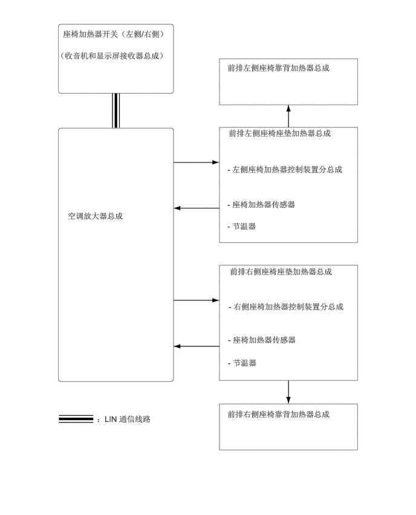

1.083,0.5 2.969,0.771
1.875,0.26
10
false
座椅加热器开关（左侧/右侧）
0.979,0.875 3.125,1.51
2.135,0.625
10
false
（收音机和显示屏接收器总成）
3.917,1.083 6.031,1.542
2.104,0.448
10
false
前排左侧座椅靠背加热器总成
3.938,2.208 6.104,2.729
2.156,0.51
10
false
前排左侧座椅座垫加热器总成
3.958,4.594 6.323,5.135
2.354,0.531
10
false
前排右侧座椅座垫加热器总成
3.917,7.052 6.052,7.51
2.125,0.448
10
false
前排右侧座椅靠背加热器总成
1.167,3.635 2.76,4.094
1.583,0.448
10
false
空调放大器总成
1.667,7.135 3.51,7.396
1.833,0.25
10
false
：LIN 通信线路
3.917,2.833 6.104,3.375
2.177,0.531
10
false
- 左侧座椅加热器控制装置分总成
3.917,3.438 5.333,3.76
1.406,0.313
10
false
- 座椅加热器传感器
3.917,3.813 4.823,4.094
0.896,0.271
10
false
- 节温器
3.938,5.198 6.167,5.719
2.219,0.51
10
false
- 右侧座椅加热器控制装置分总成
3.927,5.771 5.344,6.094
1.406,0.313
10
false
- 座椅加热器传感器
3.927,6.167 4.833,6.448
0.896,0.271
10
false
- 节温器